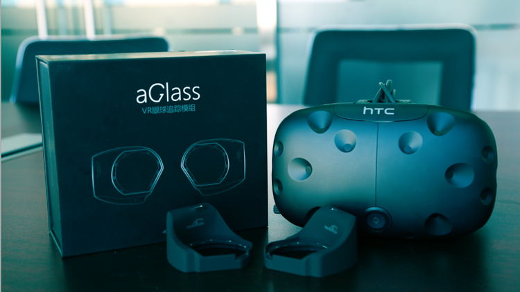
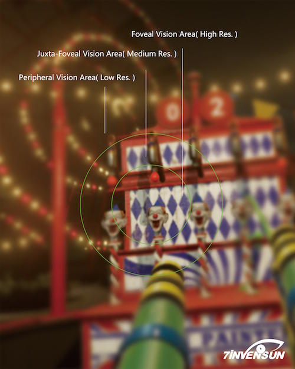

El seguimiento ocular llega a HTC Vive gracias a un accesorio PnP

La capacidad de seguir el movimiento de los ojos para interactuar con interfaces sin necesidad de utilizar mandos o permitir al usuario mirar hacia los lados manteniendo la cabeza en su sitio es sin duda una de las prestaciones más interesantes de todas las técnicas que en estos momentos están siendo exploradas de cara al lanzamiento de visores de realidad virtual de próxima generación. Pero en el caso del HTC Vive, no hará falta esperar meses o años para disfrutar de esta característica.
La startup china 7invensun, financiada parcialmente por Qualcomm y apadrinada por HTC a través de su programa de creación de accesorios innovadores para el visor Vive, ha anunciado el lanzamiento de aGlass, un módulo plug and play que permite monitorizar los ojos del usuario para interactuar con juegos y aplicaciones. Como otros dispositivos de estas características, el módulo de 7invensun estará inicialmente dirigido a los desarrolladores de software, que deberán trabajar para adaptar sus contenidos y sacar el máximo provecho a la tecnología.
Los sensores son de tipo modular y se conectan mediante sendos cables USB que luego se unen en un cable único conectado al puerto visor. Cada uno de ellos cuenta con un halo de infrarrojos que permiten seguir el movimiento de los ojos y los parpadeos del usuario.
Más allá de la interacción con elementos de la interfaz, uno de los puntos más interesantes y tal vez menos conocidos del seguimiento ocular es la posibilidad de sacar partido al renderizado foveal o foveated rendering. Esta innovadora técnica saca partido al hecho de que nuestros ojos no enfocan con la misma nitidez toda una escena, permitiendo reducir la cantidad de detalle en la periferia para liberar una gran cantidad de recursos.

En un principio el renderizado foveal se puede utilizar tanto para hacer posible el funcionamiento de visores de realidad virtual en equipos con tarjetas gráficas más modestas como para elevar notablemente la experiencia visual en aquellos ordenadores con un hardware de mayores prestaciones. Está en manos del desarrollador. Lo que no se puede escoger es el fabricante de la tarjeta, puesto que en un principio aGlass solo podrá utilizar esta técnica con los productos Nvidia.
Aunque inicialmente aGlass funcionará exclusivamente con el visor de HTC (que ha incubado este proyecto junto a otros como el módulo inalámbrico de TPCast), 7invensun tiene libertad para ofrecer su tecnología para otros dispositivos si así lo desea. El precio de venta al público es de 220 dólares. Los sensores saldrán a la venta en China el próximo mes antes de llegar a Occidente durante el tercer trimestre de este año.
Fuentes: UploadVR - ElOtroLado.net